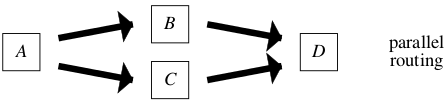

The Application of PetriNets to Workflow Management
Abstract
- Petri nets can be used as a design language for the specification of complex workflows.
- Petri net theory provides for powerful analysis techniques which can be used to verify the correctness of workflow procedures.
- Consider VM operators (e.g., build, start, suspend, stop) to bo tasks of workflow.
Introduction
- Motivation:
There were no generic tools to support workflow management.
- The main purpose of a workflow management system:
- definition
- execution
- registration
- control of processes
- Reasons for using Petri net for workflow modeling:
- formal semantics
A workflow process specified in terms of a Petri net has a clear and precise definition, because the semantics of the classical Petri net and several enhancements (color, time, hierarchy) have been defined formally.
- graphical nature
Petri nets are a graphical language. As a result, Petri nets are intuitive and easy to learn. The graphical nature also supports the communication with end-users.
- expressiveness
Petri nets support all the primitives needed to model a workflow process. All the routing constructs present in today's workflow management systems can be modeled. Moreover, the fact that states are represented explicitly, allows for the modeling of milestones and implicit choices.
- propertires
In the last three decades many people have investigated the basic properties of Petri nets. The firm mathematical foundation allows for the reasoning about these properties. As a result, there is a lot of common knowledge, in the form of books and articles, about this modeling technique.
- analysis
Petri nets are marked by the availability of many analysis techniques. Clearly, this is a great asset in favor of the use of Petri nets for workflow modeling. These techniques can be used to prove properties (safety properties, invariance properties, deadlock, etc.) and to calculate performance measures (response times, waiting times, occupation rates, etc.). In this way it is possible to evaluate alternative workflows using standard Petri-net-based analysis tools.
- vendor independent
Petri nets provide a tool-independent framework for modeling and analyzing processes. Petri nets are not based on a software package of a specific vendor and do not cease to exist if a new version is released or when one vendor takes over another vendor.
Workflow management (system)
- The ultimate goal of workflow management is to make sure that the proper activities are executed by the right person at the right time.
- The Workflow Management Coalition (WfMC) defines a workflow management system as follows ([WFM96]): A system that completely defines, manages, and executes workflows through the execution of software whose order of execution is driven by a computer representation of the workflow logic.
- characterize a Workflow Management system are:
- business operating system
- workflow manager
- case manager
- logistic control system
- Workflows are case-based.
- Cases are handled by executing tasks in a specific order.
- Alternative terms for workflow process definition:
- procedure
- flow diagram
- routing definition
- Each task has pre- and postconditions:
- the pre-conditions should hold before the task is executed.
- the post-conditions should hold after execution of the task.
- A task which needs to be executed for a specific case is called a work item.
- Most work items are executed by a resource.
- To facilitate the allocation of work items to resources, resources are grouped into classes. A resource class is a group of resources with similar characteristics.
- If a resource class is based on the capabilities (i.e. functional requirements) of its members, it is called a role.
- If the classification is based on the structure of the organization, such a resource class is called an organizational unit (e.g. team, branch or department).
- A work item which is being executed by a specific resource is called an activity.
- Four type of routing
- sequential
- parallel

- conditional (exclusive OR)
- iteration
- A workflow process is characterized by three qualities.
- a workflow process is casedriven.
- the process itself is considered to be essential.
- he process can be defined in an explicit manner.
- Production workflow is concerned which highly structured processes with almost no variations.
- Administrative workflow corresponds to case-driven processes which follow a well-defined procedure.
- Ad-hoc workflow relates to processes where the procedure is not defined (completely) in advance.
- Collaborative processes are outside the scope of our definition of workflow.
ChiSheng Su